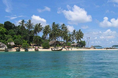

芭提雅是中南半岛南端的泰国一处著名海景度假胜地。芭提雅属于泰国春武里府（Chon Buri)，距离曼谷东南方154公里，沿泰国7号高速公路驾车车程为1小时20分。规划中的曼谷机场至芭提雅高铁轻轨线预计在2018年建成，届时两地车程将缩短为20分。
芭提雅是东南亚近年来热度极高的海滩度假、房产投资、旅游、养老圣地，享有"东方夏威夷"之誉，芭提雅已成为"海滩度假天堂"的代名词。
素以阳光、沙滩、海鲜名扬世界，美丽的海景、新奇的乐园、还有最负盛名的人妖表演，缤纷无休的夜文化，吸引着全世界的游客。
芭提雅旅游区素以阳光、沙滩、海鲜名扬天下，被誉为"东方夏威夷"，是世界著名的新兴海滨旅游度假胜地。
位于首都曼谷东南154公里、中南半岛和马来半岛间的暹罗湾处，市区面积20多平方公里，风光旖旎，气候宜人，年均温度20摄氏度左右。每年有200至300次、上百人参加的国际会议在此召开；每年接待游客1200多万人次，收入外汇折合泰币70多亿铢，是泰国旅游业的重要支柱之一。长达40公里的芭提雅海滩阳光明媚，离芭提雅海岸约10公里有个美丽的小岛一珊瑚岛，岛上沿沙滩建有餐馆和有民族特色的旅游商店。
珊瑚岛，由芭提雅码头搭乘大船前往约需30-40分钟，到达浅海后，换乘别具风格的玻璃底小船，饱览海底奇景，海水清澈，礁石、小鱼、海蜇等等尽收眼底；另可包快艇前往，20分钟便可到达,中途要经过海上平台基站，游客可选择新鲜刺激的海上降落伞项目；快到岛上的时候会经过Sak岛，可自主选择在这里体验潜水等项目。珊瑚岛主要海滩有达元海滩、通朗海滩、桑湾海滩、天海滩、萨美海滩以及象牙湾，其中中国随团游客主要前往达元海滩，750米长的海滩，闪闪发光的洁净沙滩以及湛蓝的海水相映衬；你既可享受在清澈湛蓝的水游泳，也可以享受香蕉船、摩托艇等各种水上活动；天海滩因为其宁静休闲深得泰国当地居民的喜爱，每逢周末就会有很多泰国家庭带着家眷到这里享受清新的空气、明媚的阳光、清澈的海水，喝个清凉可口的椰青、叫一个手法正宗的技师做个泰式按摩，好不惬意；萨美海滩是另外一个比较长的海滩，这里深得欧洲游客的喜欢，在这里经常可以看到金发女郎穿着性感的比基尼泳装、涂抹一身防晒霜或是橄榄油，在沙滩上铺一条大浴巾，毫无顾忌地享受日光浴；而象牙湾由于人迹罕至，所以成了好多情侣恋人的最佳选择。兰岛因为其优美的岛屿风光，海滩风光已经成为泰国人以及外国游客来到芭提雅旅游的一个必经之地。
长达40公里的芭提雅海滩阳光明媚，蓝天碧水，沙白如银，椰林茅亭，小楼别墅掩映在绿叶红瓦之间，一派东方热带独特风光，令人心旷神怡，是良好的海滨游泳场。香蕉船、海上滑水、海底漫步、冲浪、滑降落伞等水上娱乐活动新奇刺激。入夜有五彩缤纷的烟火装点着芭提雅的夜空。
位于泰国湾东海岸，距曼谷135公里，由曼谷乘汽车至此约需2小时。芭提雅是著名的海滨度假区，被誉为[亚洲度假区之后]。旅游者到此不仅可以在美丽的海滩上开展水上运动，在餐厅中品味生猛味美的海鲜，在芭提雅市区购买物美价廉的物品，还可到东芭文化村观赏泰国的传统表演。此外，珊瑚岛（Ko Larn Island）、老虎乐园（Tiger Park）、海味市场（Dried Seafood Market）、信不信由你博物馆（Believe it or Not Museum）也是旅游者常去之地。